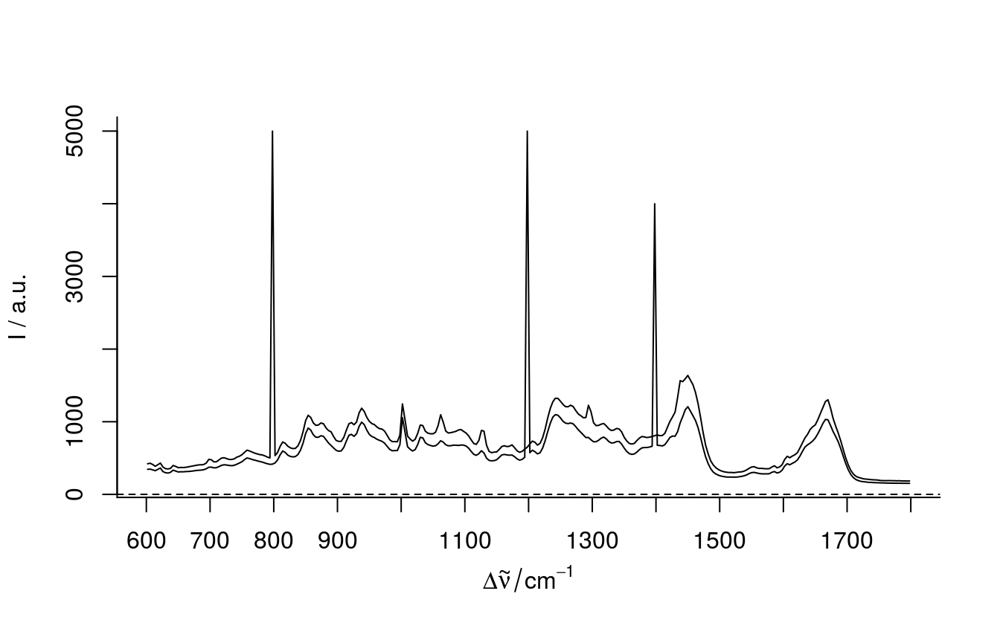
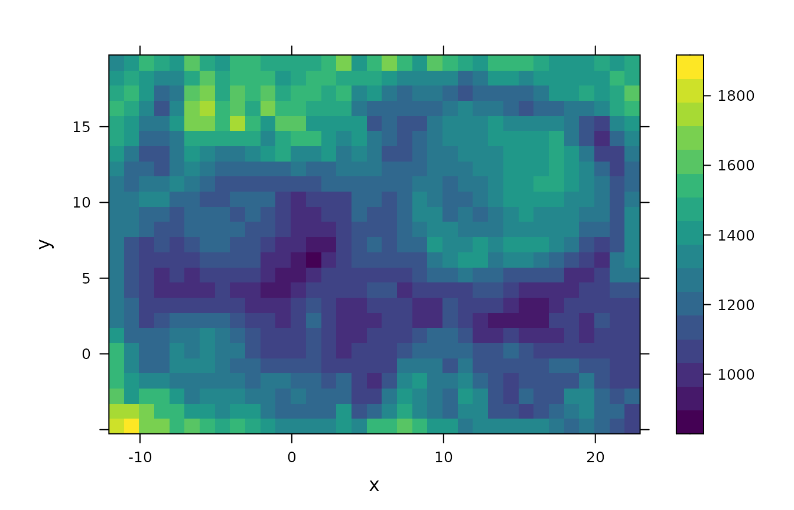
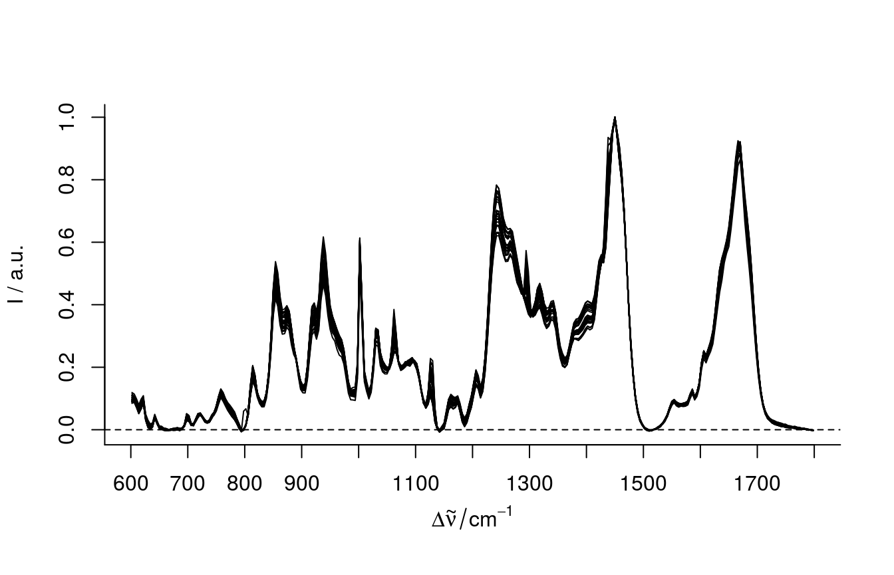

Please read the vignettes provided with the package {hyperSpec}, as this package builts upon its functionality and class definition.
If you have any suggestions for new features or found bugs in the code, documentation or vignettes please file an issue at the package GitHub repository!
The package {hyperSpec.utils} is a collection of functions to be used with objects of the hyperSpec class. While it is independent from the popular {hyperSpec} package (written by Claudia Beleites), the package defining the class and including extensive functionality, {hyperSpec.utils} intends to add some convenient shortcuts for data analysis, some more conversion, import and export functions, tools for interactive data exploration, as well as some extended functionality (such as cosmic ray removal), especially focussing on spatially resolved spectral data (spectral maps).
First, we need to load the libraries:
The dataset chondro, contained in the package {hyperSpec}, is used to demonstrate how {hyperSpec.utils} can be incorporated into an analysis workflow.
We’ll first artificially introduce some spikes to the data, as the dataset does not contain any. However, spikes due to cosmic rays are usually present in Raman measurements using a CCD detector.
chondro_spike <- chondro chondro_spike[[20, , 800]] <- 5000 chondro_spike[[50, , 1400]] <- 4000 chondro_spike[[50, , 1200]] <- 5000 plotspc(chondro_spike[c(20, 50), ])

Now we have two spectra with spikes (one of them having even two), which appear as very narrow peaks (in this case only a single discrete wavenumber) with very high intensity. Next, we’ll use the function crr() to remove them again. This function is implemented as defined in this publication by Whitaker et al. 2018 (following the R script provided in the supplementary material).
# at what ids were spikes detected? is_spike <- unlist(lapply(despiked$crr, length)) > 0 which(is_spike) #> [1] 20 50 #spike wavelengths despiked$crr[is_spike] #> [[1]] #> [1] 798 #> #> [[2]] #> [1] 1198 1398
Cosmic ray removal obviously worked well. The two spectra, where we artificially introduced spikes, were identified with the correct spike positions given in despiked$crr (closest discrete wavenumber to the selected wavenumber 800 for spectrum number 20 and 1200 as well as 1400 for spectrum 50).
Lets check whether despiked is still an object if class hyperSpec.
is_hyperSpec(despiked) #> [1] TRUE
But is it just a collection of spectra, or a spectral map?
is_hyperSpecMap(despiked) #> [1] TRUE # dimensions spcmap_dim(despiked) #> x y nwl #> 35 25 300
despiked is spatially resolved and spcmap_dim() provides the dimensions of the (hypothetical) spectral hypercube. While you usually know your data (and therefore also know whether its a spectral map or not) and could have easily looked up whether variables “x” and “y” exist within despiked@data the functions is_*() resp. their variants (consistent to the resp. base functions) is.*() are convenient shortcuts for input validation when writing new functions (but also test functions included in {hyperSpec} can be used).
To visualize the spectral map, e.g. for band 1450, we can use a modified version of plotmap(), using the viridis color scale as default
plotmap_viridis(despiked[ , , 1450]) #> Warning in levelplot.formula(spc ~ x * y, structure(list(.rownames = #> structure(c(1L, : device support for raster images unknown, ignoring #> 'raster=TRUE'

Baseline correction can be done using functionality provided by {hyperSpec} or {baseline}.
bl <- spc.fit.poly.below(despiked, poly.order = 4) baseline_corrected <- despiked - bl plotspc(baseline_corrected)
Let’s normalize on band 1450
normalized <- band_normalization(baseline_corrected, 1450) plotspc(normalized)

For some analysis not the complete spectra are of interest, but aggregations of certain bands
aggregated <- aggregate_wl(normalized, "mean", band_a = 1020 ~ 1300, band_b = 1430 ~ 1470, band_c = 1002) head(aggregated[[]]) #> band_a band_b band_c #> [1,] 0.2502085 0.7954738 0.5936036 #> [2,] 0.2489302 0.7996770 0.5923344 #> [3,] 0.2499909 0.8085492 0.5914833 #> [4,] 0.2530020 0.7865072 0.6065538 #> [5,] 0.2507131 0.7930187 0.6057977 #> [6,] 0.2531638 0.7965166 0.5871411
Or we may want to calculate first differences:
Sometimes it is convenient to use the spectral hypercube of a spectral map as an array, e.g. to be used with tools for image analysis or image registration (Be careful: do image registration only in the two spatial dimensions as you usually don’t want to transform the wavenumber dimension!), or the functionality in various packages for remote sensing (e.g. using the classes defined in {raster} by further conversion of the array - e.g. raster::brick(spcmap2array(normalized)) - with extended plotting options in {rasterVis})
spc_array <- spcmap2array(normalized) dim(spc_array) #> x y nwl #> 35 25 300 class(spc_array) #> [1] "array"